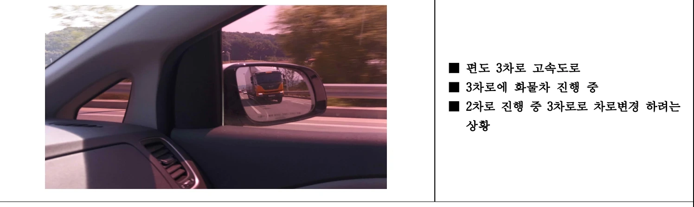

748. Hai cách lái xe nào là an toàn nhất trong tình huống sau?

- ①Vì xe chở hàng đang đi với tốc độ thấp, nên có thể chuyển làn đường bất kể khoảng cách giữa các xe.
- ②Vì có thể gây cản trở việc lưu thông bình thường của xe chở hàng, nên duy trì khoảng cách an toàn và chuyển làn đường.
- ③Khi chuyển làn đường, luôn luôn lái xe tăng tốc độ lên tối đa có thể.
- ④Kiểm tra vị trí hoặc tốc độ của xe chở hàng rồi cẩn thận chuyển làn đường.
- ⑤Nếu đảm bảo đủ khoảng cách an toàn thì không cần bật đèn xi nhan.
Xem đáp án
Đáp án
② Vì có thể gây cản trở việc lưu thông bình thường của xe chở hàng, nên duy trì khoảng cách an toàn và chuyển làn đường.
④ Kiểm tra vị trí hoặc tốc độ của xe chở hàng rồi cẩn thận chuyển làn đường.
Căn cứ
Khi chuyển hướng của ô tô, bạn không được chuyển làn nếu có nguy cơ cản trở lối đi bình thường của các ô tô khác đang đi theo hướng bạn muốn chuyển. Khi chuyển làn phải bật đèn xi nhan.
Phần căn cứ là bản dịch máy để tham khảo.